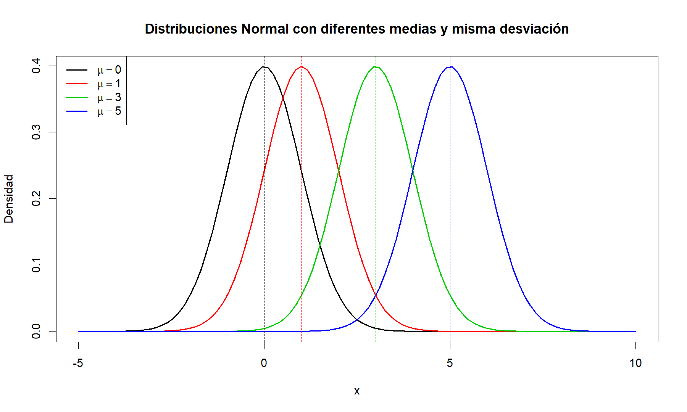

Distribuciones de Probabilidad
Variables Aleatorias
En la mayoría de problemas a los que comúnmente nos enfrentamos, la descripción del conjunto de posibles resultados de un experimento aleatorio puede ser complicado y por lo tanto el cálculo de probabilidades también se dificulta.
Por ejemplo, si una persona es seleccionada de una población, diversas características pueden ser de interés y cada una aporta al entendimiento de un fenómeno en especial, como son, el tiempo que emplea en transportarse de su casa al lugar de trabajo, que tan lejos está de su casa el sitio donde trabaja, cuantos hijos tiene, cuantas horas duerme, cuantas personas conforman su grupo familiar, cuanto gana, cuanto gasta, cuanto paga por servicios, cuantas llamadas hace diariamente, etc.
Una Variable Aleatoria es una función definida en un Espacio Muestral que asigna a cada resultado de un experimento aleatorio un valor real. Usualmente son denotadas con letras mayúsculas como (\(X\), \(Y\), \(Z\), \(T\), etc). Al conjunto de todos los posibles resultados de una variable aleatoria se le llamará Rango de la variable (\(A_X\)).
Variables Aleatorias Discretas
Un grupo de \(n\) sujetos es sometido a cierto tratamiento y después de un tiempo se registra cuantos logran mejorar con dicho tratamiento. Sea X la variable aleatoria que cuenta cuántos sujetos mejoran con el tratamiento. Entonces el rango de \(X\) será \(A_X = {0, 1, 2,..., n}\).
En una gran población se encuestan de manera aleatoria sujetos hasta encontrar el primero que responde afirmativamente a una pregunta de interés. Si \(X\) es la variable aleatoria que cuenta el número de sujetos encuestados hasta encontrar el primero que responde afirmativamente, entonces el rango de \(X\) está dado por \(A_X = {1, 2, 3,...}\).
Este tipo de variables se traducen en funciones matemáticas o valores tabulados, y la probabilidad se calcula a través de la función de masa de probabilidad (f.m.p). Sea la variable aleatoria discreta \(X\), para cualquier resultado posible de \(X\) se cumple que:
- \(p(x)\geq0\) para todo \(x\) en el rango de \(X\).
- \(\sum_x p(x)=1\)
- \(p(x)=P(X=x)\)
Suponga un experimento aleatorio que consta en consultar una familia conformada por 3 hijos, en donde, se asume que la probabilidad de ser niño o niña es la misma. Si se define la variable aleatoria \(X\), el número de niñas que hay en la familia.
Sea \(H\) la letra que representa que el miembro de la familia es niño y \(M\) para denotar que el miembro de la familia es niña, entonces, se tendrá que el espacio muestral se define como \[\Omega=\{HHH,HHM,HMH,MHH,HMM,MHM,MMH,MMM\}\] Como el interés de la variable aleatoria \(X\) radica en el número de niñas que hay en la familia, se tendrá entonces que a partir del espacio muestral \(\Omega\) se puede contar el número de éxitos que hay en cada situación asignando los valores \(0\), \(1\), \(2\) y \(3\) a la variable aleatoria \(X\).
Para encontrar la función de probabilidades del experimento aleatorio asociadas a la variable aleatoria \(X\), podemos emplear la definición de la probabilidad a priori, aprovechando que todos los puntos del espacio muestral poseen la misma probabilidad. En otro caso podríamos emplear un diagrama de árbol para encontrar dichas probabilidades.
Para el caso de \(X=0\), observamos que de las \(8\) posibles situaciones que hay dentro del espacio muestral \(\Omega\), solo tenemos una situación en donde no hay ninguna mujer, y en consecuencia, al aplicar la definición de probabilidad a priori, se tendrá que la probabilidad de que \(X=0\), es: \[P(X=0)=\frac{1}{8}\] Procedimiento similar se aplica para \(X=1\), \(X=2\) y \(X=3\), obteniendo como resultado la siguiente tabla de probabilidades:
\(X\) \(0\) \(1\) \(2\) \(3\) \(p(x)\) \(\frac{1}{8}\) \(\frac{3}{8}\) \(\frac{3}{8}\) \(\frac{1}{8}\) Para calcular la probabilidad de que en una familia que posee tres hijos, hayan 2 o más niñas entonces se aplica la suma de probabilidades. \[P(X \geq 2)=\sum_{x=2}^{3} p(x)=p(2)+p(3)=\frac{3}{8}+\frac{1}{8}=\frac{1}{2}\]
Función de distribución acumulada caso discreto
La función de distribución acumulada (f.d.a) denotada por \(F(x)\), para una variable aleatoria discreta \(X\) con distribución de probabilidad \(p(x)\) es de la forma
\[F(x)=P(X\leq x)=∑_{t\leq x} p(t)\quad −\infty<x<\infty\]
para cualquier \(x\) dentro del rango de \(X\), \(F(x)\) será la suma acumulada de todos los valores de rango de \(X\) menores a \(x\).
Nota: Si se quieren calcular probabilidades con la función de distribución acumulada en el caso discreto, entonces, si \(a\) y \(b\) son dos números constantes enteras, deberán tenerse en cuenta las siguientes reglas
- \(P(a\leq X\leq b)=F(b)−F(a−1)\)
- \(P(a<X\leq b)=F(b)−F(a)\)
- \(P(a\leq X<b)=F(b−1)−F(a−1)\)
- \(P(a<X<b)=F(b−1)−F(a)\)
- \(P(X \geq a)=1-P(X < a)=1−F(a−1)\)
- \(P(X>a)=1-P(X\leq a)=1−F(a)\)
- \(P(X\leq b)=F(b)\)
- \(P(X<b)=F(b−1)\)
Basado en el ejemplo anterior, calculemos la función de distribución acumulada \(F(x)\) y calculemos la probabilidad de que en una familia que posee tres hijos, hayan 2 o más niñas.
A partir de la tabla donde se define la función de masa de probabilidad se procede a realizar el cálculo de la función de distribución acumulada \(F(x)\). Para ello, debemos calcular las siguientes probabilidades. \[\begin{align*} F(0) =& P(X\leq 0)=p(0)=1/8\\\\ F(1) =& P(X\leq 1)=p(0)+p(1)=4/8\\\\ F(2) =& P(X\leq 2)=p(0)+p(1)+p(2)=7/8\\\\ F(3) =& P(X\leq 3)=p(0)+p(1)+p(2)+p(3)=8/8 \end{align*}\] Entonces, mediante el empleo de estas probabilidades, podemos construir la función de distribución acumulada para la variable aleatoria \(X\), tal que \[\begin{align*} F(x) = \begin{cases} 0 & x<0 \\ \frac{1}{8} & 0\leq x<1 \\ \frac{4}{8} & 1\leq x<2 \\ \frac{7}{8} & 2\leq x<3 \\ \frac{8}{8} & x\geq 3 \end{cases} \end{align*}\] Dado que el interés es calcular la probabilidad de que el número de niñas sea mayor a \(1\) pero no más de \(2\), entonces se tendrá que la probabilidad de interés es la siguiente \[P(1 < X \leq 2)\] Entonces, siguiendo las reglas anteriormente expuestas, dicha probabilidad puede calcularse mediante \[\begin{align*} P(X \geq 2) & = 1 - F(2-1) \\ & = 1 - F(1) \\ & = 1 - \frac{4}{8}\\ & = \frac{4}{8} = \frac{1}{2} \end{align*}\] y por tanto, se tendrá que la probabilidad de que en una familia de \(3\) hijos, tengan \(2\) o más niñas es de 50%.
Esperanza matemática caso discreto
Si x es una variable aleatoria con fmp p(x), entonces la media o valor esperado de la variable aleatoria se denota por \(E[X]\) o \(\mu\) está dada por
\[E[X]=\sum_x xp(x)\]
El valor esperado del número de niñas que hay en una familia que posee 3 hijos sería: \[\begin{align*} E[X]&=\sum_{0}^3x\,p(x) \\\\ &=0\,p(0)+1\,p(1)+2\,p(2)+3\,p(3) \\\\ &=0\left(\frac{1}{8}\right)+1\left(\frac{3}{8}\right)+2\left(\frac{3}{8}\right)+3\left(\frac{1}{8}\right) \\\\ &=0+\frac{3}{8}+\frac{6}{8}+\frac{3}{8} \\\\ &=\frac{12}{8} \\\\ &=1.5 \end{align*}\] es decir, se tedrá que en una familia que posea \(3\) hijos, se espera encontrar que el número promedio de niñas será de \(1.5\) niñas.
Propiedades de la esperanza matemática
Sea \(a\) y \(b\) dos números constantes (reales) y \(X\) una variable aleatoria, entonces se tiene que
- \(E[a]=a\)
- \(E[X+b]=E[X]+b\)
- \(E[aX]=aE[X]\)
- si \(g(X)\) es una función de \(X\), entonces
\[E[g(X)]=\sum_xg(x)p(x)\]
Varianza caso discreto
Sea \(X\) una variable aleatoria con fmp \(p(x)\), entonces si \(m(X) = (X - E[X])^2\), se tendrá que la varianza de \(X\) que se denota \(Var[X]\) o \(\sigma^2\) estará dada por
\[Var[X] = E\left\{\left(X-E[X]\right)^2\right\}=\sum_x(x-E[X])^2p(x)\]
Puede demostrarse a partir de la ecuación anterior, que una alternativa para el cálculo de la \(Var[X]\) es de la forma
\[Var[X] = E[X^2]-E[X]^2\]
además, la raíz cuadrada de la varianza de \(X\) se llama desviación estándar de \(X\), se denota por \(SD[X]\) o \(\sigma\) y se define como
\[SD[X] = \sqrt{Var[X]}\]
La desviación estándar del número de niñas que hay en una familia que posee 3 hijos requiere del cálculo de la varianza, entonces primero se debe calcular \(E(X^2)\): \[\begin{align*} E[X^2]&=\sum_{0}^3x^2\,p(x) \\\\ &=0^2\,p(0)+1^2\,p(1)+2^2\,p(2)+3^2\,p(3) \\\\ &=0\left(\frac{1}{8}\right)+1\left(\frac{3}{8}\right)+4\left(\frac{3}{8}\right)+9\left(\frac{1}{8}\right) \\\\ &=0+\frac{3}{8}+\frac{12}{8}+\frac{9}{8} \\\\ &=\frac{24}{8} \\\\ &=3 \end{align*}\] Entonces la varianza es: \[\begin{align*} Var[X]&=E[X^2] - E[X]^2 \\ &=3 - (1.5)^2 \\ &=3 - 2.25 \\ &=0.75 \end{align*}\] Por lo tanto la desviación estándar es \(SD[X]=\sqrt{0.75}=0.8660\). Es decir, se tendrá que el número promedio de niñas que tiene una familia que posee \(3\) hijos es de \(1.5\) niñas, con una desviación estándar de \(0.8660\) niñas.
Propiedades de la varianza
- \(Var[X]=E[X^2]-E[X]^2\)
- \(Var[a]=0\), donde \(a\in\mathbb{R}\)
- \(Var[aX+b]=a^2Var[x]\), donde \(a,b \in\mathbb{R}\)
Variables Aleatorias Continuas
De la producción diaria de jabones se escoge uno al azar y se mide su pH. Sea \(X\): el pH del jabón. El rango de la variable aleatoria \(X\) es cualquier valor entre 0 y 14. Así: \(A_X = [0 , 14]\).
El desgaste de una llanta en un período de un año es una variable aleatoria. Si \(X\) es la variable aleatoria que representa el desgaste en décimas de milímetros, \(A_X = (0 , a)\), donde \(a\) representa la profundidad mínima de la llanta estando nueva.
Este tipo de variables se caracteriza porque el rango es un intervalo real, y su comportamiento está determinado por una función matemática y la probabilidad se calcula através de la función de densidad de probabilidad (p.d.f). Se dice que la función \(f(x)\) es una función de densidad de probabilidad (fdp) de la variable aleatoria continua \(X\), definida en el conjunto de números reales si:
- \(f(x)\geq0\) para todo \(x\) en los Reales
- \(\int_{-\infty}^{\infty} f(x)dx=1\)
- \(\int_b^a f(x)dx=P(a<X<b)\)
Función de distribución acumulada caso continuo
La función de distribución acumulada (fda) denotada por \(F(x)\), para una variable aleatoria continua \(X\) con distribución de probabilidad \(f(x)\) es de la forma
\[F(x)=P(X\leq x)=\int_{-\infty}^x f(t)dt\]
para cualquier \(x\), \(F(x)\) es el área izquierda bajo la curva de densidad.

Nota: Si se quieren calcular probabilidades con la función de distribución acumulada en el caso continuo, entonces, si \(a\) y \(b\) son dos números constantes, deberán tenerse en cuenta las siguientes reglas
- \(P(a\leq X\leq b)=F(b)−F(a)\)
- \(P(X\geq a)=1−F(a)\)
- \(P(X\leq b)=F(b)\)
Nota: Recordar que en el caso continuo, las probabilidad con o sin la igualdad son equivalentes, y por tanto, solo se escriben las tres reglas anteriores para generalizar todos los casos.
Esperanza matemática caso continuo
Si \(x\) es una variable aleatoria con fdp \(f(x)\), entonces la media o valor esperado de la variable aleatoria se denota por \(E[X]\) o \(\mu\) está dada por
\[E[X]=\int_{-\infty}^{\infty} xf(x)dx\]
Propiedades de la esperanza matemática
Sea \(a\) y \(b\) dos números constantes (reales) y \(X\) una variable aleatoria, entonces se tiene que
- \(E[a]=a\)
- \(E[X+b]=E[X]+b\)
- \(E[aX]=aE[X]\)
- si \(g(X)\) es una función de \(X\), entonces
\[E[g(X)]=\int_x g(x)p(x)dx\]
Varianza caso continuo
Si \(g(X)=(X-\mu_X)^2\), entonces \(E[g(X)]\) será la Varianza de \(X\), la cual se denotar? \(Var[x]\) o \(\sigma_X^2\) o simplemente \(\sigma^2\), y se define como:
\[Var[X]=E[(X-\mu_X)^2]=E[X^2]-E[X]^2\]
además, la raíz cuadrada de la varianza de \(X\) se llama desviación estándar de \(X\), se denota por \(SD[X]\) o \(\sigma\) y se define como
\[SD[X] = \sqrt{Var[X]}\]
Propiedades de la varianza
- \(Var[X]=E[X^2]-E[X]^2\)
- \(Var[a]=0\), donde \(a\in\mathbb{R}\)
- \(Var[aX+b]=a^2Var[x]\), donde \(a,b \in\mathbb{R}\)
Distribuciones de probabilidad
Por muchos años los matemáticos y estadísticos han establecido funciones de probabilidad a diversos fenómenos de la naturaleza y la sociedad. No obstante, en algunos casos se observa que se cumplen ciertos patrones, por lo tanto, el comportamiento de un fenómeno se puede modelar con la misma función de probabilidad de otro fenómeno. En este sentido, se establecen las distribuciones de probabilidad como funciones definidas para entender el comportamiento de fenómenos que tienen un patrón identificable.
Distribuciones de Probabilidad Discretas
Distribución Binomial
Proceso de Bernoulli
Una secuencia de ensayos de Bernoulli forma un proceso de Bernoulli, si se cumplen las siguientes condiciones:
1. En cada ensayo ocurre uno de dos posibles resultados, mutuamente excluyentes. Uno de los posibles resultados se denota (arbitrariamente) como un exito y el otro, como fracaso.
2. La probabilidad de un exito, denotado por \(p\), permanece constante de un ensayo a otro, y la probabilidad de fracaso, \(1-p\), se denota con \(q\).
3. Los ensayos son independientes, es decir, el resultado de algún ensayo en particular no es afectado por el resultado de cualquier otro ensayo.
La distribución binomial es una distribución de probabilidad discreta que cuenta el número de éxitos en una secuencia de n ensayos de Bernoulli independientes entre sí, con una probabilidad fija p de ocurrencia del éxito entre los ensayos. Para \(n = 1\), la binomial se convierte, de hecho, en una distribución de Bernoulli.
\[p(x)={n \choose x}p^x(1-p)^{n-x}\quad x = \{0, 1, 2, \dots , n\}\]
Por notación \(X \sim Bin(n,p)\), además \(E[X]=np\) y \(VAR[X]=np(1-p)\).
Ejemplo
Suponga que en un estudio se encontró que 2 de cada 5 estudiantes no desea tomar clases virtuales. Si se selecciona aleatoriamente 20 estudiantes, ¿Cuál es la probabilidad de que no menos de 6 pero menos de 12 deseen tomar clases virtuales?
En este caso estamos interesados en la variable \(X\), que representa el número de estudiantes que desean tomar clases virtuales, en donde sabemos que si, 2 de cada 5 no quieren tomar clases virtuales, entonces se tendrá que 3 de cada 5 si desean tomar clases virtuales. Por tanto al aplicar la definición de frecuencia relativa se tiene que
\[p=\frac{\text{Número de éxitos}}{\text{Número de ensayos (muestras)}}=\frac{3}{5}=0.6\]
siendo \(p\) la probabilidad de que un estudiante desee tomar clases virtuales. Entonces la distribución de probabilidad es:
\[p(x)={20 \choose x}p^x(1-p)^{20-x}\quad x = \{0, 1, 2, \dots , 20\}\]
Ahora, se tiene interés en conocer la probabilidad de que no menos de 6 pero menos de 12 deseen tomar clases virtuales. En este caso, la probabilidad asociada puede calcularse de la siguiente manera.
\[\begin{align*} P(6 \leq x < 12) &= \sum_{x=6}^{11} \left(\begin{array}{c}20\\ x\end{array}\right)0.6^x(1-0.6)^{20-x} \\\\ &= \left(\begin{array}{c}20\\ 6\end{array}\right)0.6^6(0.4)^{20-6} + \ldots + \left(\begin{array}{c}20\\ 11\end{array}\right)0.6^{11}(0.4)^{20-11} \\\\ &= 0.4027898 \end{align*}\]
Es decir que, la probabilidad de que como mínimo 6 pero menos de 12 estudiantes deseen tomar clases virtuales de los 20 seleccionados, es del 40.28%. En R también se pueden calcular estas probabilidades con las funciones basadas en binom
rbinom: generanvalores aleatorios binomiales con tamañosizey probabilidadprobdbinom: calcula la probabilidad binomial exacta dexcon tamañosizey probabilidadprob.pbinom: calcula la probabilidad acumulada binomial deqcon tamañosizey probabilidadprob.qbinom: calcula el valor de \(x\) basado en la probabilidadpde una binomial con tamañosizey probabilidadprob.
## [1] 0.4027898## [1] 0.4027898
Distribución binomial con n=10, p=0.1

Se puede observar que para una distribución binomial con parámetro \(p < 0.5\) la distribución presenta asimetría hacia la izquierda. Por otra parte la distribución empírica se ajusta a la distribución teórica para tamaños de muestra grandes; para el caso de la distribución con parámetro \(p=0.1\), se observa que hay un buen ajuste para tamaños de muestra \(N \geq 50\).
Distribución Binomial con n=10, p=0.5

Se puede observar que para una distribución binomial con parámetro \(p = 0.5\) la distribución teórica es simétrica. Por otra parte la distribución empírica se ajusta a la distribución teórica para tamaños de muestra muy grandes; contrario al caso anterior, el ajuste es más lento y se require tamaños de muestra \(N \geq 1000\).
Distribución Binomial con n=10, p=0.9

Se puede observar que para una distribución binomial con parámetro \(p > 0.5\) la distribución presenta asimetría hacia la derecha. Por otra parte la distribución empírica se ajusta a la distribución teórica para tamaños de muestra grandes; para el caso de la distribución con parámetro \(p=0.9\), se observa que hay un buen ajuste para tamaños de muestra \(N \geq 50\).